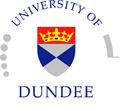

Scottish Programming Languages Seminar 2014 Winter Meeting
Welcome to the site of the SLPS 2014 winter meeting, on Wednesday 26th of February, hosted by the School of Computing, University of Dundee. Past SPLS events are available on the SPLS webpage.
If you intend to attend, please register here.
The invited talk will be given by Andy Gordon (Microsoft Research and University of Edinburgh).
Below is the up to date programme. A detailed programme is also available.
Programme
- 12:00-13:00 — Lunch
- 13:00-14:00 — Andy Gordon (Microsoft Research and University of Edinburgh) — Tabular: A Schema-Driven Probabilistic Programming Language
- 14:00-14:30 — Coffee Break
- 14:30-15:00 — Davide Ancona (University of Genoa) — Sound and complete subtyping between coinductive types for object-oriented languages
- 15:00-15:30 — Joseph Davidson (Heriot-Watt) — Models and Modalities
- 15:30-16:00 — Alexander Konovalov (St Andrews) — Recomputation in Scientific Experiments
- 16:00-16:30 — Coffee Break
- 16:30-17:00 — Adam Barwell (St Andrews) — Using Erlang Skeletons to Parallelise Realistic Medium-Scale Parallel Programs
- 17:00-17:30 — Fredrik Nordvall Forsberg (Strathclyde) — Restricted dependent bounded linear types for arbitrary resources
- 17:30-20:00 — Pub